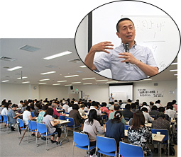

|
|
■テーマ ゼロから知りたい！！「社会保障と税の一体改革」と私たちのくらし 講 師：芝田 英昭氏(立教大学コミュニティ福祉学部教授） ＜概 要＞  ○社会保障制度について 社会保障制度は、生きていく上での安心の確保してくれる大切な制度です。日本のGDPは先進国で3位ですが、生活保護費は毎年3兆円という現状です。受給者は全体の数％(約210万人)ですが、生活が苦しい人が多くなる一方、生活保護には厳しい国と感じます。国保、健保、共済、老齢年金、遺族・障害年金、子どもの児童手当や保育所の制度等、社会保障の根幹をなす制度無しには生きていけません。 ○社会保障と税の一体改革素案について 素案には、国民の共有財産｢支え合う社会｣が基盤とあります。しかし、地域コミュニティは高度経済成長時代から崩壊し、助け合いができるつながりを持てないのが今の日本の社会、単なる支え合いだけでは社会を構築することはできません。負担は現役世代中心で、高齢者は、年金と医療の社会保障支出で六割くらいの支出をしめますが、必要なのは当然です。 ○税制抜本改革について ｢社会保障給付には財源が必要であり、負担なくして受益はない｣とありますが、税を払えない人もいます。｢消費税の社会保障財源化｣とは、消費税収全てを社会保障に使うことです。社会保障の構成費を見てみると消費税分で8.8％。スウェーデンは消費税25％で社会保障費の内12.3％をしめています。10％になった時、福祉国家のスウェーデンよりよくなるのでしょうか。10兆円近くが社会保障費に使われる想定のはずですが、7兆円増えた分は赤字の補填に回すことにしているため、1％のみしか増えないことが国会の議論ではっきりしています。法人税は、退職給与引当金、海外進出準備金には課税がなく、基本的に黒字部分にしかかかりません。企業の内部留保は不況下でも、劇的に増えています。 ○能力の協働性について 能力の協働性とは、人間の能力は周りからの協力協働があって発揮できることです。自分の努力で儲けたのだから、そこから税金を取ったらおかしいということではなく、儲ける土壌を作ってきた周りの協力・協働に対して、還元、貢献するという意味でも、所得税として払うべきではないかと思います。 最後に、原発問題についても触れ、個人の責任で考え、いろいろな情報を集め判断することが大事です。今日の話は、考えるきっかけにしてくだいと結ばれました。 |